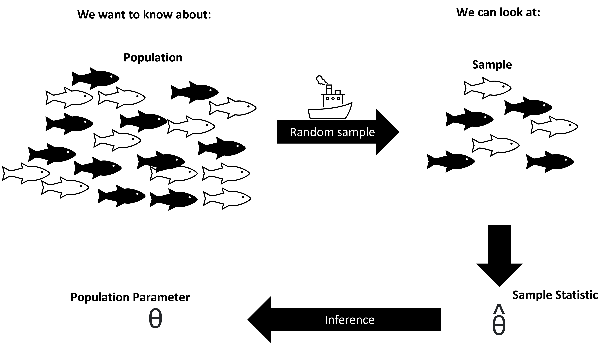

Statistics in Ecology
As ecologists, we often are interested in testing hypotheses about some ecological relationship, prediction, or theory. Generally, our hypotheses may relate to some wild population, large ecosystem, or a broad-scale relationship (e.g. a predicted relationship from a theory; like allometric scaling or survival under different conditions, etc). However, it is typically impossible to survey the entire group of interest. In statistics, we define the entire group of interest as our “population” or the “population-level”. Note that this may be slightly different than the ecological definition of population as a group of same-species organisms in an ecosystem. For the purposes of this article, I’ll use “population” in the statistical sense.
Let’s say we were interested in whether or not campus squirrels were fatter than squirrels from Harbison forest. To test this prediction, we’d need to collect some campus squirrels and some forest squirrels, get a body-fat composition analysis and compare them. Well, in this example, our “population-level” interest is all the squirrels in the forest and all the squirrels on campus. What specifically we are interested in is the difference between mean campus body fat and mean forest body fat. In statistical notation, this would be written as: \(\mu_{c} - \mu_{f}\). Where c and f denote campus and forest. The term \(\mu\) is common for population-level mean. Any metric of interest at the population-level, we can call a parameter. However, it would be impossible to capture every single squirrel. So we can’t actually measure our parameter of interest. Instead we have to take a sample from the population. Let’s say we collect 5 squirrels each from the forest and campus. Well now we could calculate the mean of our sample. The metric calculated at the sample-level, is referred to as a statistic. In our case that would be the sample mean of campus and forest squirrels (in statistics notation this is either \(\bar{x}_c - \bar{x}_f\) or \(\hat{\mu}_c - \hat{\mu}_f\)). Well, how can we know if our statistics are actually representative of the true population parameter of interest? That is where inferential statistical tests enter the picture. At the most broad level, statistical analyses give us the ability to discuss how confident we are that our samples are representative of reality (the population-level parameters).

In this document, I’ll briefly summarize some basics of data types, how to plot them, and a basic tool kit for statistically testing your data. This is by no means an exhaustive list, but hopefully a good starting point. Additionally, in this article I’ll try to provide a little bit more detail for those who are interested. Don’t feel the need to deeply understand everything. However, please read through the whole article. A common issue in applying statistics to ecological data, is that ecologists fall into traps of how to correctly understand and interpret the results of a test. To avoid these traps, we need to understand the basics of common approaches, then why they might be misleading when interpreting them.
Like most things, learning how and when to apply a given test, comes with experience. So I hope you are able to refer back while working on independent projects.
Let’s recap some basic terms:
Population - in a statistical sense, this is the entire group of interest (could be multiple, or less, biological populations)
Parameter - a metric which describes a feature at the population level
Sample - a sub-group of the population
Statistic - a metric describing the sample-level, which can be used to make inferences about the population.
Types of Data
There are several types of data which we will encounter while processing ecological data. The type of data that we collect determines what types of statistical tests we may be able to use with our data.
Here’s some of the basic types of data we may encounter:
1. Categorical Data - represent distinct categories or groups. These categories are often non-numeric and do not have a natural order. When discussing categorical data, we might also specify the number of levels it has.
- EX: Habitat Types: Categorizing different habitat types, such as forest, grassland, or wetland. In that case, we might say there are three levels.
2. Continuous Data - take any numeric value. They are measured on a continuous scale and can have decimal values. Note that we may take count data and make it continuous by surveying a fixed area.
Ex:
Temperature: Recording temperature in degrees Celsius or Fahrenheit.
Height of Trees: Measuring tree heights in meters or centimeters.
Density of snails: We might count the number of snails per square meter. This would be continuous
3. Count Data - the number of occurrences or items in a fixed area, time, or sample. Note that this is often converted to a continuous variable if standardizing across space or time
Ex:
Bird Counts: Counting the number of birds in a specific area during a bird survey.
Insect Abundance: Counting the number of insects on a plant.
4. Ordinal Data - categorical data with a natural order or ranking among categories. However, the intervals between categories may not be uniform.
Ex:
Behavioral Rankings: Ranking animal behavior from “aggressive” to “docile.”
Vegetation Health: Assessing vegetation health as “poor,” “fair,” or “excellent.”
5. Time Series Data - data are collected over successive time intervals. They are used to analyze trends and changes over time. These data are often continuous (although could be categorical time series). However, there as several specialized approaches to dealing with such data.
Ex:
Stream Flow: Measuring daily stream flow rates over a year.
Climate Data: Recording monthly temperature and precipitation data over several decades.
6. Multivariate Data - multiple variables measured for each sample or observation. They can include combinations of categorical, continuous, or count data.
Ex:
Community Composition: Analyzing species composition in ecological communities with multiple species present.
Ecosystem Characteristics: Measuring various ecosystem attributes, such as biodiversity, soil nutrients, and plant biomass, in a study area.
Types of Variables
When analyzing ecological data, we typically are interested in relating how two different sets of data are related (or different).
Predictive variables - these are sometimes referred to as independent or explanatory variables. This is the data which you are using to explain a phenomena
Response variables - these are at times referred to as dependent variables. This is the data which is the phenonena/metric of interest.
Let’s take the squirrel example above. In that case, our explanatory variable would be location (2 possible levels: campus or forest). Our response variable would be squirrel body fat composition. These would be categorical and continuous data respectively.
Plotting Data
Plots should always offer a nice visual representation of your data. They should have some level of summary or trends visible through the image. Always make sure that your figure caption and axes titles
See this example guide for a reference on what plots work well for what data
The basic idea behind most analyses
Ecologists have relied on a suite of statistical tools to make inferences about their data. Traditionally, frequentist methods have dominated the landscape. At a broad level, this category of approach assumes that there is a fixed parameter among a population of interest. Then our sample, ideally unbiased and random, can be used to make inferences about the population, as discussed above.
At this point, you’ve likely implemented a variety of statistical tests. However, let’s review some basic ideas behind these analyses.
Null hypothesis significance testing
Many common approaches to analyzing data rely on the idea of null-hypothesis significance testing. These approaches set a null and an alternative hypothesis, then test how likely our data supports the ability to “reject” the null hypothesis. The null hypothesis, in most cases, is the base assumption that there is no effect, no difference, or no relationship (depending on the data being analyzed). Alternatively, the alternative hypothesis is that there is some effect, difference, or relationship. Effectively, what most analyses do is account for how large the sample size is, how big the sample variation is, then evaluate its ability to determine a conclusion about the population-level.
There is a lot of jargon in that, and it might be confusing when speaking so broadly. So let’s take a look in our squirrel example:
We are interested in the body-fat composition of two populations of squirrels. Now we collected some sample of squirrels from each location and we want to compare them. In this case we’d probably use a t-test. The null hypothesis would be that there is no significant difference between our two squirrel populations (\(\mu_c - \mu_f = 0\)). The alternative hypothesis is that there is a significant difference in mean body fat between the two squirrels ( \(\mu_c - \mu_f \neq 0\) ) .
We then would put all our sample data into a t-test to evaluate whether or not to “reject” our hypothesis. or in other words: if there is a significant difference.
P-values
The p-value is the metric used to determine whether or not to reject a null hypothesis. There’s a number of ways which I’ve heard the p-value explained
The probability
I think the most intuitive way of thinking about the p-vale is that it is the probability of you harvesting the data you did, if the observed statistic (value, difference, slope, etc) was not real.
Effect size:
A major pitfall with the common approaches of statistics is that researchers get hyper-focused on p-values. They seek to get a result with a low p-value
The effect size is really what we are interested in
Common Statistical Tests & Analyses
| Predictive Variable (Independent) | Response Variable (Dependent) | Appropriate Data Analysis / Statistical Test |
|---|---|---|
| Categorical (2 levels) | Numerical | t-test if normally distributed, Mann-Whitney U if not |
| Categorical (>2 levels) | Numerical | ANOVA (linear-model extention) if assumptions met, Kruskal-Wallis test if not Various post-hoc tests |
| Categorical | Chi-Square Test | |
| Numerical | Categorical | Logistic Regression (for binary response) or Multinomial Logistic Regression (for multiple categories) |
| Numerical | Linear Regression (for linear relationship) or Nonlinear Regression (for nonlinear relationship) | |
| Time Series | Numerical | Time Series Analysis (e.g., ARIMA, Exponential Smoothing) |
| Categorical | Time to Event | Survival Analysis (e.g., Kaplan-Meier, Cox Proportional-Hazards Regression) |
| Continuous | Continuous | Correlation (pearson’s for linear, Spearmans for non-linear) |
| Multivariate (Multiple Predictors) | Numerical | Multiple Linear Regression (for linear relationships) or Multiple Nonlinear Regression (for nonlinear relationships) |
| Categorical | Multinomial Logistic Regression | |
| Ordinal | Ordinal | Ordinal Regression (e.g., Proportional Odds Model) |
| Count | Count | Poisson Regression (for count data) or Negative Binomial Regression (for overdispersed count data) |
Caveats with common approaches:
A note with terminology:
There are several things which may get confusing when reading about ecological data analysis.
-- Wait, is it significant?
-- What is a model, what is a test?
Often times, these terms are used loosely and interchangeably. At the most basic, s
-- What are null hypotheses?
When learning statistics, you are likely introduced to the term “null” and “alternative” hypotheses. These are artifacts of the most common school of statistical thought, Frequentist Statistics, or Null Hypothesis Significance Testing (NHST). At it’s most basic, NHST is comparing whether or not the data we observed
Emerging approaches
Multivariate models are increasingly common in ecology. Often times
Machine learning methods are growing in popularity as well. The exact term “machine learning” can be broadly interpretted depending on how flashy authors might want their titles to be. However, at a basic level, Ordinary least squares is technically a machine learning approach